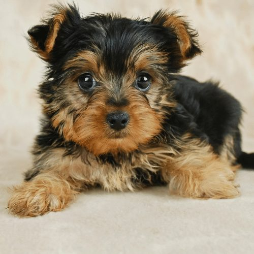
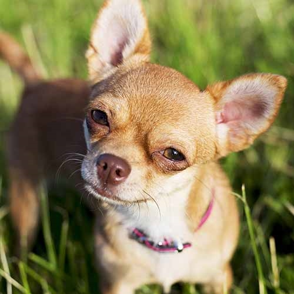
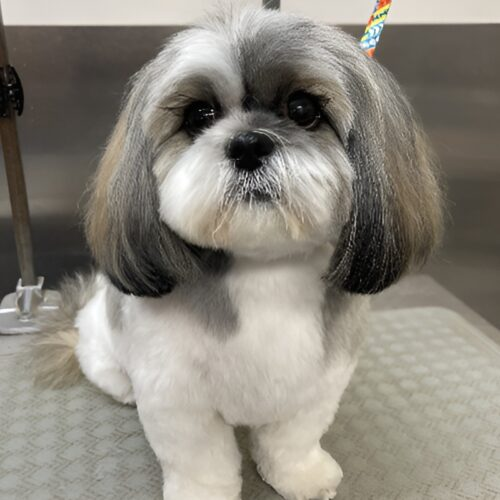

- Yorkshire Terriers are a small breed usually weighing between 4-7 pounds.
- Bold and lively personalites help create awesome memories with.
Discover some of the best small breeds!
Find the perfect companion for you. Need a loyal, compact and friendly pal who is completely devoted to you? Then you've come to the right place!! We specialize in the breeds of yorkies, chihuahuas, and shi tzus. Our locations are a safe haven for these pups and can't wait till they find loving owners! Our mission is simple: Everyone deserves a second chance. We have saved over 10,000 animals from being euthanized.
Yorkshire Terrier
Chihuahua
- Chihuahuas are one of the smallest breeds of dogs weighing in at a range 2-6 pounds.
- Extremely loyal and devoted to their owner. Easily creates strong bonds.
Shi Tzu
- The Shi-Tzu thrives on human companionship and is considered a perfect lap dog.
- For the most part, most shi-tzu's are well mannered and are great for families and kids.
Let's give them a second chance... This is what we do
Since 2006, Luv Puppiez has rescued over 10,000 furry friends. Many abandoned and needing immediate care, we set out to try and rescue as many as we can. With one goal in mind, we have created a safe haven for dogs from many walks in life -- Everyone needs love, dogs do too.
According to ASMFPA, around 80,000 dogs are euthanized each year. With due deligence, our goal is to expand and help as many helpless animals as we can. Our CEO Elder is adamant about creating a better world for these luvable pets.
Our association cares for and nurtures rescued dogs with the hopes of finding them a new home. We get new dogs each day so please continually check the site if you plan to adopt!
Every dog we care for will have documentation and their shots, we try our best to provide the best possible service for you. Ps. Remember this is all make-believe i am using it as a practice project!